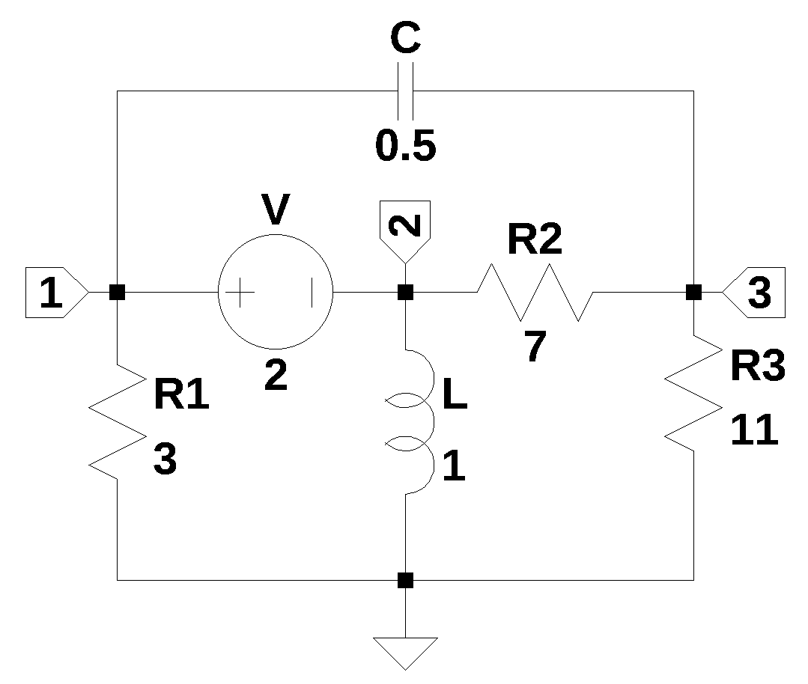
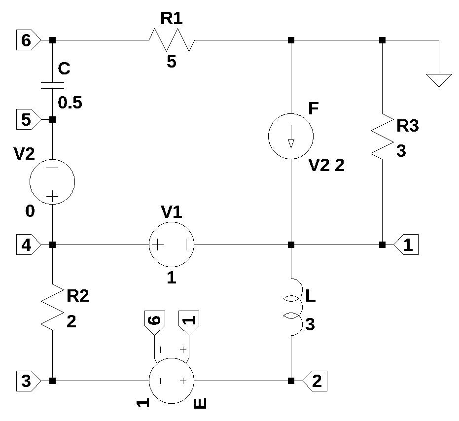
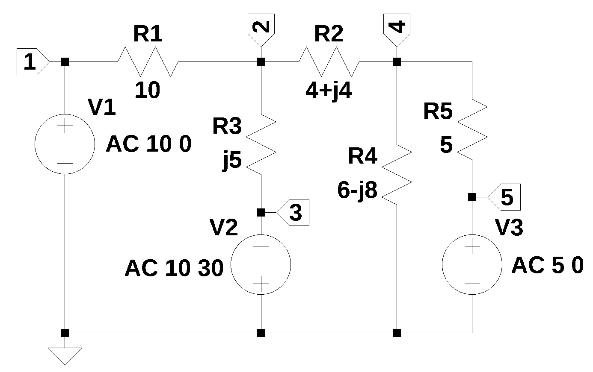

from sympy import *
import numpy as np
from tabulate import tabulate
from scipy import signal
import matplotlib.pyplot as plt
import pandas as pd
import SymMNA
from IPython.display import display, Markdown, Math, Latex
init_printing()6 RLC Networks
An RLC network is an electrical circuit composed of passive components: Resistors (\(R\)), Inductors (\(L\)), and Capacitors (\(C\)), as well as dependent and independent sources. This chapter presents the analysis of example RLC networks using MNA and Python.
These components can be connected in series, parallel or combinations of series and parallel branches. These circuits are typically driven by an alternating current (AC) source. RLC circuits exhibit resonance and damping behaviors, which are critical for applications like tuning radio receivers, filtering signals and generating oscillations. Resonance is the most important characteristic of an RLC circuit. It occurs at a specific frequency, the resonant frequency (\(f_0\) or \(\omega_0\)), where the opposing effects of the inductor and capacitor perfectly cancel each other out:
\[X_L = X_C\]
The resonant angular frequency (\(\omega_0\)) is given by:
\[\omega_0 = \frac{1}{\sqrt{LC}}\]
At resonance, the circuit’s overall opposition to current, known as impedance (\(Z\)), is purely resistive. Impedance (\(Z\)) is the total opposition to the flow of alternating current. It is calculated using the components’ values and the driving frequency. For a series RLC circuit, the impedance is:
\[Z = \sqrt{R^2 + (X_L - X_C)^2}\]
The resistor (\(R\)) in the circuit is responsible for damping (dissipating) the oscillations that occur due to the energy exchange between the inductor and capacitor. The resistance determines how quickly the oscillations decay in the absence of an external source.
In this chapter the use of Python and SymPy for performing phasor analysis is explored in the third example. Phasor analysis, is a fundamental technique used in electrical engineering to simplify the analysis of Alternating Current (AC) circuits in a steady-state condition. In AC circuits containing components like inductors and capacitors, the voltage and current waveforms are often out of phase, meaning their peaks and zero crossings don’t occur at the same time. This phase difference is crucial for understanding circuit behavior, especially related to the power factor and energy efficiency.
Analyzing time-varying sinusoidal waveforms (like those in AC) using calculus (differential equations) is complex. Phasor analysis replaces these time-domain functions with a much simpler, fixed representation called a phasor. A phasor is a complex number that captures the two essential, time-invariant characteristics of a sinusoidal waveform: its magnitude and its phase angle (\(\phi\)). The phasor representation is typically written in polar form as \(\mathbf{V} = V_m \angle \phi\) for voltage or \(\mathbf{I} = I_m \angle \phi\) for current.
By transforming the circuit from the time-domain to the phasor domain, the differential equations that govern the circuit become simple algebraic equations. Resistors, inductors and capacitors are replaced by their impedance (\(\mathbf{Z}\)), which is a complex number representing the total opposition to current flow. For example, an inductor’s impedance is \(\mathbf{Z}_L = j\omega L\), and a capacitor’s is \(\mathbf{Z}_C = \frac{1}{j\omega C}\), where \(\omega\) is the angular frequency.
Once in the phasor domain, standard DC circuit analysis techniques like Ohm’s Law (\(\mathbf{V} = \mathbf{I}\mathbf{Z}\)), Kirchhoff’s Laws, Nodal Analysis, and Mesh Analysis can be applied using complex number arithmetic to easily solve for unknown voltages and currents. The final phasor results are then converted back to the time-domain to get the actual, instantaneous voltage and current waveforms. This transformation significantly streamlines the calculation process for linear AC circuits operating at a single frequency. The originator of phasor analysis (or the phasor transform) for electric circuits was Charles Proteus Steinmetz in the late 19th century, see Section F.3.6.
These examples will illustrate application of the code to find the node voltages for these circuits.
| Example | Description |
|---|---|
| Circuit 1 | A circuit having one voltage source and three resistors, one capactor and one inductor. |
| Circuit 2 | A circuit having a mix of components. |
| Phasor Analysis | A circuit using phasse representation in the solution. |
The following Python libraries are used in this notebook.
6.1 RLC Circuit 1
The circuit shown in the schematic below contains three resistors, one capacitor, one inductor and one independent voltage source. The nodes have been numbered and the reference node is indicated by the ground symbol. The schematic was drawn using LTSpice and the netlist was expored and copied into the code cell below.
The circuit is a typical of circuits found in circuit analysis text books. The independed voltage source spans nodes 1 and 2. Typically, these nodes would be considred a super-node when applying KCL to obtain a set of network equations. When using the MNA procedure, extra equations are generated to deal with voltage sourses that span circuit nodes.

The netlist is loaded as a string and applied to the variable.
net_list = '''
R1 1 0 3
R2 3 2 7
R3 3 0 11
C 3 1 0.5
L 2 0 1
V 1 2 2
'''The netlist is passed to the function SymMNA.smna(net_list) to generate the MNA matrices.
report, network_df, i_unk_df, A, X, Z = SymMNA.smna(net_list)The matrices are converted to SymPy types and the symbolic network equations are displayed using markdown.
# Put matrices into SymPy
X = Matrix(X)
Z = Matrix(Z)
NE_sym = Eq(A*X,Z)
# turn the free symbols into SymPy variables.
var(str(NE_sym.free_symbols).replace('{','').replace('}',''))
temp = ''
for i in range(len(X)):
temp += '${:s}$<br>'.format(latex(Eq((A*X)[i:i+1][0],Z[i])))
Markdown(temp)\(- C s v_{3} + I_{V} + v_{1} \left(C s + \frac{1}{R_{1}}\right) = 0\)
\(I_{L} - I_{V} + \frac{v_{2}}{R_{2}} - \frac{v_{3}}{R_{2}} = 0\)
\(- C s v_{1} + v_{3} \left(C s + \frac{1}{R_{3}} + \frac{1}{R_{2}}\right) - \frac{v_{2}}{R_{2}} = 0\)
\(v_{1} - v_{2} = V\)
\(- I_{L} L s + v_{2} = 0\)
The SymPy function solve is used to solve the system of equations. The magic function %%time is used to measure the time it takes to generate a solution. For the circuit shown in Figure 6.1, a few hundred milli seconds is needed on my i3 processor.
%%time
U_sym = solve(NE_sym,X)CPU times: user 92.1 ms, sys: 8.01 ms, total: 100 ms
Wall time: 100 msThe node voltages in symbolic form are displayed below.
temp = ''
for i in U_sym.keys():
temp += '${:s} = {:s}$<br>'.format(latex(i),latex(U_sym[i]))
Markdown(temp)\(v_{1} = \frac{C R_{1} R_{2} R_{3} V s + L R_{1} V s + R_{1} R_{2} V + R_{1} R_{3} V}{C L R_{1} R_{2} s^{2} + C L R_{2} R_{3} s^{2} + C R_{1} R_{2} R_{3} s + L R_{1} s + L R_{2} s + L R_{3} s + R_{1} R_{2} + R_{1} R_{3}}\)
\(v_{2} = \frac{- C L R_{1} R_{2} V s^{2} - C L R_{2} R_{3} V s^{2} - L R_{2} V s - L R_{3} V s}{C L R_{1} R_{2} s^{2} + C L R_{2} R_{3} s^{2} + C R_{1} R_{2} R_{3} s + L R_{1} s + L R_{2} s + L R_{3} s + R_{1} R_{2} + R_{1} R_{3}}\)
\(v_{3} = \frac{C R_{1} R_{2} R_{3} V s - L R_{3} V s}{C L R_{1} R_{2} s^{2} + C L R_{2} R_{3} s^{2} + C R_{1} R_{2} R_{3} s + L R_{1} s + L R_{2} s + L R_{3} s + R_{1} R_{2} + R_{1} R_{3}}\)
\(I_{V} = \frac{- C L R_{1} V s^{2} - C L R_{3} V s^{2} - C R_{1} R_{2} V s - C R_{1} R_{3} V s - C R_{2} R_{3} V s - L V s - R_{2} V - R_{3} V}{C L R_{1} R_{2} s^{2} + C L R_{2} R_{3} s^{2} + C R_{1} R_{2} R_{3} s + L R_{1} s + L R_{2} s + L R_{3} s + R_{1} R_{2} + R_{1} R_{3}}\)
\(I_{L} = \frac{- C R_{1} R_{2} V s - C R_{2} R_{3} V s - R_{2} V - R_{3} V}{C L R_{1} R_{2} s^{2} + C L R_{2} R_{3} s^{2} + C R_{1} R_{2} R_{3} s + L R_{1} s + L R_{2} s + L R_{3} s + R_{1} R_{2} + R_{1} R_{3}}\)
The function SymMNA.get_part_values is used to build a dictionary of component values from the netlist dataframe and the values are printed below.
element_values = SymMNA.get_part_values(network_df)
# display the component values
for k,v in element_values.items():
print('{:s} = {:s}'.format(str(k), str(v)))V = 2.0
R1 = 3.0
R2 = 7.0
R3 = 11.0
C = 0.5
L = 1.0Substitute numerical values in place of the symbolic reference designators and display the equations with numeric values.
NE = NE_sym.subs(element_values)
temp = ''
for i in range(shape(NE.lhs)[0]):
temp += '${:s} = {:s}$<br>'.format(latex(NE.rhs[i]),latex(NE.lhs[i]))
Markdown(temp)\(0 = I_{V} - 0.5 s v_{3} + v_{1} \cdot \left(0.5 s + 0.333333333333333\right)\)
\(0 = I_{L} - I_{V} + 0.142857142857143 v_{2} - 0.142857142857143 v_{3}\)
\(0 = - 0.5 s v_{1} - 0.142857142857143 v_{2} + v_{3} \cdot \left(0.5 s + 0.233766233766234\right)\)
\(2.0 = v_{1} - v_{2}\)
\(0 = - 1.0 I_{L} s + v_{2}\)
Use the solve function to obtain the expressions for the node voltages and unknown currents.
U = solve(NE,X)temp = ''
for i in U.keys():
temp += '${:s} = {:s}$<br>'.format(latex(i),latex(U[i]))
Markdown(temp)\(v_{1} = \frac{474.0 s + 216.0}{98.0 s^{2} + 273.0 s + 108.0}\)
\(v_{2} = \frac{- 196.0 s^{2} - 72.0 s}{98.0 s^{2} + 273.0 s + 108.0}\)
\(v_{3} = \frac{418.0 s}{98.0 s^{2} + 273.0 s + 108.0}\)
\(I_{V} = \frac{- 28.0 s^{2} - 266.0 s - 72.0}{98.0 s^{2} + 273.0 s + 108.0}\)
\(I_{L} = \frac{- 196.0 s - 72.0}{98.0 s^{2} + 273.0 s + 108.0}\)
The expressions above contain the Laplace variable, \(s\) which is equal to \(j\omega\).
The circuit’s node voltages and unknwon currents can be solved for at individual frequencies. In the code cell below, a frequency of 1 Hz is used to evaluate the equations at a particular frequency. The frequency in Hz must be converted to radians/s as shown below.
freq = 1 # Hz
omega = 2*np.pi*freq
print(f'frequency = {omega:0.2f} radians/s')frequency = 6.28 radians/sThe element values are inserted in to the newtork equatons and \(j\omega\) is also substituded into the equations. Notice that \(1j\) is being used as the imaginary operator.
NE = NE_sym.subs(element_values)
NE_w1 = NE.subs({s:1j*omega})The code below displays the equations with numeric values. Notice that Python and SymPy have generated a solution which use \(i\) as the imaginary operator.
temp = ''
for i in range(shape(NE_w1.lhs)[0]):
temp += '${:s} = {:s}$<br>'.format(latex(NE_w1.rhs[i]),latex(NE_w1.lhs[i]))
Markdown(temp)\(0 = I_{V} + v_{1} \cdot \left(0.333333333333333 + 3.14159265358979 i\right) - 3.14159265358979 i v_{3}\)
\(0 = I_{L} - I_{V} + 0.142857142857143 v_{2} - 0.142857142857143 v_{3}\)
\(0 = - 3.14159265358979 i v_{1} - 0.142857142857143 v_{2} + v_{3} \cdot \left(0.233766233766234 + 3.14159265358979 i\right)\)
\(2.0 = v_{1} - v_{2}\)
\(0 = - 6.28318530717959 i I_{L} + v_{2}\)
Again using solve to obtain solutions for voltages and currents.
U_w1 = solve(NE_w1,X)The code cell below tabulates the results for the node voltages and unknown currents as magnitude and phase values. Six significant digits are displayed so that results can be compared to solutions obtained from LTSpice.
table_header = ['unknown', 'mag','phase, deg']
table_row = []
for name, value in U_w1.items():
table_row.append([str(name),float(abs(value)),float(arg(value)*180/np.pi)])
print(tabulate(table_row, headers=table_header,colalign = ('left','decimal','decimal'),tablefmt="simple",floatfmt=('5s','.6f','.6f')))unknown mag phase, deg
--------- -------- ------------
v1 0.722388 -69.630838
v2 1.875123 -158.828643
v3 0.635373 -65.482650
I_V 0.475375 146.246200
I_L 0.298435 111.1713576.2 RLC Circuit 2
The circuit shown below is a more complex circuit containing dependent sources, which would make the circuit analysis a bit difficult to tackle manually with pencil and paper.

The netlist is loaded as a string and applied to the variable.
net_list = '''
R2 4 3 2
R1 0 6 5
C 6 5 0.5
L 1 2 3
V1 4 1 1
F 0 1 V2 2
V2 4 5 0
R3 0 1 3
E 2 3 1 6 1
'''
# generate the MNA matrices.
report, network_df, i_unk_df, A, X, Z = SymMNA.smna(net_list)
# Put matrices into SymPy
X = Matrix(X)
Z = Matrix(Z)
# assemble the system of equations
NE_sym = Eq(A*X,Z)
# turn the free symbols into SymPy variables.
var(str(NE_sym.free_symbols).replace('{','').replace('}',''))
# display the network equations
temp = ''
for i in range(len(X)):
temp += '${:s}$<br>'.format(latex(Eq((A*X)[i:i+1][0],Z[i])))
Markdown(temp)\(- I_{F} + I_{L} - I_{V1} + \frac{v_{1}}{R_{3}} = 0\)
\(I_{Ea} - I_{L} = 0\)
\(- I_{Ea} + \frac{v_{3}}{R_{2}} - \frac{v_{4}}{R_{2}} = 0\)
\(I_{V1} + I_{V2} - \frac{v_{3}}{R_{2}} + \frac{v_{4}}{R_{2}} = 0\)
\(C s v_{5} - C s v_{6} - I_{V2} = 0\)
\(- C s v_{5} + v_{6} \left(C s + \frac{1}{R_{1}}\right) = 0\)
\(- v_{1} + v_{4} = V_{1}\)
\(v_{4} - v_{5} = V_{2}\)
\(- I_{L} L s + v_{1} - v_{2} = 0\)
\(I_{F} - I_{V2} f = 0\)
\(- ea v_{1} + ea v_{6} + v_{2} - v_{3} = 0\)
Notice that the symbole ea is being used as the gain for the VCVS componet \(E\) in Figure 6.2. This is because SymPy uses the symbol \(e\) for the Euler value.
Us the solve function to obtain the expressions for the node voltages and unknown currents. The node voltages in symbolic form are displayed below.
U_sym = solve(NE_sym,X)
temp = ''
for i in U_sym.keys():
temp += '${:s} = {:s}$<br>'.format(latex(i),latex(U_sym[i]))
Markdown(temp)\(v_{1} = \frac{- C R_{3} V_{1} f s + C R_{3} V_{1} s + C R_{3} V_{2} f s - C R_{3} V_{2} s}{- C R_{1} s + C R_{3} f s - C R_{3} s - 1}\)
\(v_{2} = \frac{C L R_{1} V_{1} ea s^{2} - C L R_{1} V_{1} s^{2} - C L R_{1} V_{2} ea s^{2} - C L R_{3} V_{1} ea f s^{2} + C L R_{3} V_{1} ea s^{2} + C L R_{3} V_{2} ea f s^{2} - C L R_{3} V_{2} ea s^{2} + C L R_{3} V_{2} f s^{2} - C L R_{3} V_{2} s^{2} - C R_{2} R_{3} V_{1} f s + C R_{2} R_{3} V_{1} s + C R_{2} R_{3} V_{2} f s - C R_{2} R_{3} V_{2} s - L V_{1} s}{- C L R_{1} s^{2} + C L R_{3} f s^{2} - C L R_{3} s^{2} - C R_{1} R_{2} s + C R_{2} R_{3} f s - C R_{2} R_{3} s - L s - R_{2}}\)
\(v_{3} = \frac{- C L R_{1} V_{1} s^{2} + C L R_{3} V_{2} f s^{2} - C L R_{3} V_{2} s^{2} - C R_{1} R_{2} V_{1} ea s + C R_{1} R_{2} V_{2} ea s + C R_{2} R_{3} V_{1} ea f s - C R_{2} R_{3} V_{1} ea s - C R_{2} R_{3} V_{1} f s + C R_{2} R_{3} V_{1} s - C R_{2} R_{3} V_{2} ea f s + C R_{2} R_{3} V_{2} ea s + C R_{2} R_{3} V_{2} f s - C R_{2} R_{3} V_{2} s - L V_{1} s}{- C L R_{1} s^{2} + C L R_{3} f s^{2} - C L R_{3} s^{2} - C R_{1} R_{2} s + C R_{2} R_{3} f s - C R_{2} R_{3} s - L s - R_{2}}\)
\(v_{4} = \frac{- C R_{1} V_{1} s + C R_{3} V_{2} f s - C R_{3} V_{2} s - V_{1}}{- C R_{1} s + C R_{3} f s - C R_{3} s - 1}\)
\(v_{5} = \frac{- C R_{1} V_{1} s + C R_{1} V_{2} s - V_{1} + V_{2}}{- C R_{1} s + C R_{3} f s - C R_{3} s - 1}\)
\(v_{6} = \frac{- C R_{1} V_{1} s + C R_{1} V_{2} s}{- C R_{1} s + C R_{3} f s - C R_{3} s - 1}\)
\(I_{V1} = \frac{C L V_{1} s^{2} - C L V_{2} s^{2} - C R_{1} V_{1} ea s + C R_{1} V_{1} s + C R_{1} V_{2} ea s + C R_{2} V_{1} s - C R_{2} V_{2} s + C R_{3} V_{1} ea f s - C R_{3} V_{1} ea s - C R_{3} V_{1} f s + C R_{3} V_{1} s - C R_{3} V_{2} ea f s + C R_{3} V_{2} ea s + V_{1}}{- C L R_{1} s^{2} + C L R_{3} f s^{2} - C L R_{3} s^{2} - C R_{1} R_{2} s + C R_{2} R_{3} f s - C R_{2} R_{3} s - L s - R_{2}}\)
\(I_{V2} = \frac{- C V_{1} s + C V_{2} s}{- C R_{1} s + C R_{3} f s - C R_{3} s - 1}\)
\(I_{L} = \frac{- C R_{1} V_{1} ea s + C R_{1} V_{1} s + C R_{1} V_{2} ea s + C R_{3} V_{1} ea f s - C R_{3} V_{1} ea s - C R_{3} V_{1} f s + C R_{3} V_{1} s - C R_{3} V_{2} ea f s + C R_{3} V_{2} ea s + V_{1}}{- C L R_{1} s^{2} + C L R_{3} f s^{2} - C L R_{3} s^{2} - C R_{1} R_{2} s + C R_{2} R_{3} f s - C R_{2} R_{3} s - L s - R_{2}}\)
\(I_{F} = \frac{- C V_{1} f s + C V_{2} f s}{- C R_{1} s + C R_{3} f s - C R_{3} s - 1}\)
\(I_{Ea} = \frac{- C R_{1} V_{1} ea s + C R_{1} V_{1} s + C R_{1} V_{2} ea s + C R_{3} V_{1} ea f s - C R_{3} V_{1} ea s - C R_{3} V_{1} f s + C R_{3} V_{1} s - C R_{3} V_{2} ea f s + C R_{3} V_{2} ea s + V_{1}}{- C L R_{1} s^{2} + C L R_{3} f s^{2} - C L R_{3} s^{2} - C R_{1} R_{2} s + C R_{2} R_{3} f s - C R_{2} R_{3} s - L s - R_{2}}\)
Numerical valuses can be substituded into the equations.
element_values = SymMNA.get_part_values(network_df)
# substitute numerical values
NE = NE_sym.subs(element_values)
# solve and display
U = solve(NE,X)
temp = ''
for i in U.keys():
temp += '${:s} = {:s}$<br>'.format(latex(i),latex(U[i]))
Markdown(temp)\(v_{1} = \frac{3.0 s}{2.0 s + 2.0}\)
\(v_{2} = \frac{9.0 s^{2} + 12.0 s}{6.0 s^{2} + 10.0 s + 4.0}\)
\(v_{3} = \frac{15.0 s^{2} + 16.0 s}{6.0 s^{2} + 10.0 s + 4.0}\)
\(v_{4} = \frac{5.0 s + 2.0}{2.0 s + 2.0}\)
\(v_{5} = \frac{5.0 s + 2.0}{2.0 s + 2.0}\)
\(v_{6} = \frac{5.0 s}{2.0 s + 2.0}\)
\(I_{V1} = \frac{- 3.0 s^{2} - 2.0 s - 2.0}{6.0 s^{2} + 10.0 s + 4.0}\)
\(I_{V2} = \frac{s}{2.0 s + 2.0}\)
\(I_{L} = - \frac{1}{3.0 s^{2} + 5.0 s + 2.0}\)
\(I_{F} = \frac{s}{s + 1.0}\)
\(I_{Ea} = - \frac{1}{3.0 s^{2} + 5.0 s + 2.0}\)
The circuit’s node voltages and unknwon currents can be solved for at individual frequencies. In the code cell below, a frequency of 1 Hz is used to evaluate the equations at a particular frequency.
freq = 1 # Hz
omega = 2*np.pi*freq
NE = NE_sym.subs(element_values)
NE_w1 = NE.subs({s:1j*omega})
U_w1 = solve(NE_w1,X)
table_header = ['unknown', 'mag','phase, deg']
table_row = []
for name, value in U_w1.items():
table_row.append([str(name),float(abs(value)),float(arg(value)*180/np.pi)])
print(tabulate(table_row, headers=table_header,colalign = ('left','decimal','decimal'),tablefmt="simple",floatfmt=('5s','.6f','.6f')))unknown mag phase, deg
--------- -------- ------------
v1 1.481356 9.043061
v2 1.505890 3.118858
v3 2.490273 5.464698
v4 2.473924 5.400414
v5 2.473924 5.400414
v6 2.468926 9.043061
I_V1 0.485540 -171.060180
I_V2 0.493785 9.043061
I_L 0.008292 15.099672
I_F 0.987570 9.043061
I_Ea 0.008292 15.0996726.3 Phasor Analysis
In this example the use of phasors is examined. Phasor analysis is a fundamental technique in electrical engineering used to simplify the steady-state analysis of Alternating Current (AC) circuits by converting time-varying sinusoidal voltage and current signals into complex numbers, known as phasors.
A phasor represents the signal’s magnitude (amplitude) and its phase angle, effectively transforming the complex differential equations required for time-domain analysis into simple algebraic equations in the frequency domain. This algebraic simplification allows engineers to easily apply DC circuit analysis laws, like Ohm’s Law and Kirchhoff’s Laws, to AC components (resistors, inductors, and capacitors) by representing them with a complex quantity called impedance (\(Z\)). The origin of the phasor concept is attributed primarily to Charles Proteus Steinmetz, who, working at General Electric in the late 19th century, formalized the use of complex numbers to analyze AC systems, building upon the operational calculus work of Oliver Heaviside.

The functions polar2rec and rec2polar perform conversion between rectangular notation and magnitude and phase notation.
def polar2rec(mag, ang, units='deg'):
''' polar to rectangular conversion
mag: float
magnitude of the time invarient sinusudial signal
ang: float
the angle of the time invarient sinusudial signal
units: string
if units is set to deg, and is in degrees not radians
returns: complex
rectangular corrdinates of voltage vector
'''
if units == 'deg':
ang = ang * np.pi / 180
return mag * np.exp(1j * ang)
def rec2polar(value):
'''rectangular to polar conversion
value: complex float
returns:
magnitude, phase (in degrees)
'''
return float(abs(value)), float(arg(value)*180/np.pi)The netlist generated by LTSpice is pasted into the cell below and some edits were made to remove the inductor series resistance and the independent sources are set to their DC values. The componet values are set to 1 for now. Later the phasor quantities will be substituted.
net_list = '''
V1 1 0 1
V2 0 3 1
V3 5 0 1
R1 2 1 1
R2 4 2 1
R3 3 2 1
R4 0 4 1
R5 5 4 1
'''The network equations are generated from the netlist and displayed below.
report, network_df, df2, A, X, Z = SymMNA.smna(net_list)
# Put matricies into SymPy
X = Matrix(X)
Z = Matrix(Z)
NE_sym = Eq(A*X,Z)
# generate markdown text to display the network equations.
temp = ''
for i in range(len(X)):
temp += '${:s}$<br>'.format(latex(Eq((A*X)[i:i+1][0],Z[i])))
Markdown(temp)\(I_{V1} + \frac{v_{1}}{R_{1}} - \frac{v_{2}}{R_{1}} = 0\)
\(v_{2} \cdot \left(\frac{1}{R_{3}} + \frac{1}{R_{2}} + \frac{1}{R_{1}}\right) - \frac{v_{3}}{R_{3}} - \frac{v_{4}}{R_{2}} - \frac{v_{1}}{R_{1}} = 0\)
\(- I_{V2} - \frac{v_{2}}{R_{3}} + \frac{v_{3}}{R_{3}} = 0\)
\(v_{4} \cdot \left(\frac{1}{R_{5}} + \frac{1}{R_{4}} + \frac{1}{R_{2}}\right) - \frac{v_{5}}{R_{5}} - \frac{v_{2}}{R_{2}} = 0\)
\(I_{V3} - \frac{v_{4}}{R_{5}} + \frac{v_{5}}{R_{5}} = 0\)
\(v_{1} = V_{1}\)
\(- v_{3} = V_{2}\)
\(v_{5} = V_{3}\)
The sysmbols generated by the Python code are extraced by the SymPy function free_symbols and then declared as SymPy variables. Then the equations are solved and the results are displayed.
# turn the free symbols into SymPy variables
var(str(NE_sym.free_symbols).replace('{','').replace('}',''))
# The newtork equations can be solved symbolically.
U_sym = solve(NE_sym,X)
# display the symbolic solution
temp = ''
for i in U_sym.keys():
temp += '${:s} = {:s}$<br>'.format(latex(i),latex(U_sym[i]))
Markdown(temp)\(v_{1} = V_{1}\)
\(v_{2} = \frac{- R_{1} R_{2} R_{4} V_{2} - R_{1} R_{2} R_{5} V_{2} + R_{1} R_{3} R_{4} V_{3} - R_{1} R_{4} R_{5} V_{2} + R_{2} R_{3} R_{4} V_{1} + R_{2} R_{3} R_{5} V_{1} + R_{3} R_{4} R_{5} V_{1}}{R_{1} R_{2} R_{4} + R_{1} R_{2} R_{5} + R_{1} R_{3} R_{4} + R_{1} R_{3} R_{5} + R_{1} R_{4} R_{5} + R_{2} R_{3} R_{4} + R_{2} R_{3} R_{5} + R_{3} R_{4} R_{5}}\)
\(v_{3} = - V_{2}\)
\(v_{4} = \frac{R_{1} R_{2} R_{4} V_{3} + R_{1} R_{3} R_{4} V_{3} - R_{1} R_{4} R_{5} V_{2} + R_{2} R_{3} R_{4} V_{3} + R_{3} R_{4} R_{5} V_{1}}{R_{1} R_{2} R_{4} + R_{1} R_{2} R_{5} + R_{1} R_{3} R_{4} + R_{1} R_{3} R_{5} + R_{1} R_{4} R_{5} + R_{2} R_{3} R_{4} + R_{2} R_{3} R_{5} + R_{3} R_{4} R_{5}}\)
\(v_{5} = V_{3}\)
\(I_{V1} = \frac{- R_{2} R_{4} V_{1} - R_{2} R_{4} V_{2} - R_{2} R_{5} V_{1} - R_{2} R_{5} V_{2} - R_{3} R_{4} V_{1} + R_{3} R_{4} V_{3} - R_{3} R_{5} V_{1} - R_{4} R_{5} V_{1} - R_{4} R_{5} V_{2}}{R_{1} R_{2} R_{4} + R_{1} R_{2} R_{5} + R_{1} R_{3} R_{4} + R_{1} R_{3} R_{5} + R_{1} R_{4} R_{5} + R_{2} R_{3} R_{4} + R_{2} R_{3} R_{5} + R_{3} R_{4} R_{5}}\)
\(I_{V2} = \frac{- R_{1} R_{4} V_{2} - R_{1} R_{4} V_{3} - R_{1} R_{5} V_{2} - R_{2} R_{4} V_{1} - R_{2} R_{4} V_{2} - R_{2} R_{5} V_{1} - R_{2} R_{5} V_{2} - R_{4} R_{5} V_{1} - R_{4} R_{5} V_{2}}{R_{1} R_{2} R_{4} + R_{1} R_{2} R_{5} + R_{1} R_{3} R_{4} + R_{1} R_{3} R_{5} + R_{1} R_{4} R_{5} + R_{2} R_{3} R_{4} + R_{2} R_{3} R_{5} + R_{3} R_{4} R_{5}}\)
\(I_{V3} = \frac{- R_{1} R_{2} V_{3} - R_{1} R_{3} V_{3} - R_{1} R_{4} V_{2} - R_{1} R_{4} V_{3} - R_{2} R_{3} V_{3} + R_{3} R_{4} V_{1} - R_{3} R_{4} V_{3}}{R_{1} R_{2} R_{4} + R_{1} R_{2} R_{5} + R_{1} R_{3} R_{4} + R_{1} R_{3} R_{5} + R_{1} R_{4} R_{5} + R_{2} R_{3} R_{4} + R_{2} R_{3} R_{5} + R_{3} R_{4} R_{5}}\)
A dictionary is created for the element values and the numerical values are assigned.
element_values = SymMNA.get_part_values(network_df)
element_values[V1] = polar2rec(10, 0, units='deg')
element_values[V2] = polar2rec(10, 30, units='deg')
element_values[V3] = polar2rec(5, 0, units='deg')
element_values[R1] = 10
element_values[R2] = 4+4j
element_values[R3] = 5j
element_values[R4] = 6-8j
element_values[R5] = 5
NE = NE_sym.subs(element_values)Display the equations for \(\omega=1\).
temp = ''
for i in range(shape(NE.lhs)[0]):
temp += '${:s} = {:s}$<br>'.format(latex(NE.rhs[i]),latex(NE.lhs[i]))
Markdown(temp)\(0 = I_{V1} + \frac{v_{1}}{10} - \frac{v_{2}}{10}\)
\(0 = - \frac{v_{1}}{10} + v_{2} \cdot \left(\frac{1}{10} - 0.2 i + 0.03125 \cdot \left(4.0 - 4.0 i\right)\right) + 0.2 i v_{3} - 0.03125 v_{4} \cdot \left(4.0 - 4.0 i\right)\)
\(0 = - I_{V2} + 0.2 i v_{2} - 0.2 i v_{3}\)
\(0 = - 0.03125 v_{2} \cdot \left(4.0 - 4.0 i\right) + v_{4} \cdot \left(\frac{1}{5} + 0.03125 \cdot \left(4.0 - 4.0 i\right) + 0.01 \cdot \left(6.0 + 8.0 i\right)\right) - \frac{v_{5}}{5}\)
\(0 = I_{V3} - \frac{v_{4}}{5} + \frac{v_{5}}{5}\)
\(10.0 = v_{1}\)
\(8.66025403784439 + 5.0 i = - v_{3}\)
\(5.0 = v_{5}\)
Solve the network equations and display the results.
U = solve(NE,X)
table_header = ['unknown', 'mag','phase, deg']
table_row = []
for name, value in U.items():
table_row.append([str(name),float(abs(value)),float(arg(value)*180/np.pi)])
print(tabulate(table_row, headers=table_header,colalign = ('left','decimal','decimal'),tablefmt="simple",floatfmt=('5s','.6f','.6f')))unknown mag phase, deg
--------- --------- ------------
v1 10.000000 0.000000
v2 4.574219 124.771754
v3 10.000000 -150.000000
v4 3.594255 41.498814
v5 5.000000 0.000000
I_V1 1.315666 163.405921
I_V2 2.128974 145.354766
I_V3 0.663289 134.1013766.4 Summary
In this chapter three RLC circuits were analyized using MNA with Python. The main points illustrated are:
- Network equations are easily generated and solutions can be found for almost any linear circuit.
- Results are the same as from the LTSpice simulations.
- The use of phasors were explored in circuit 3.